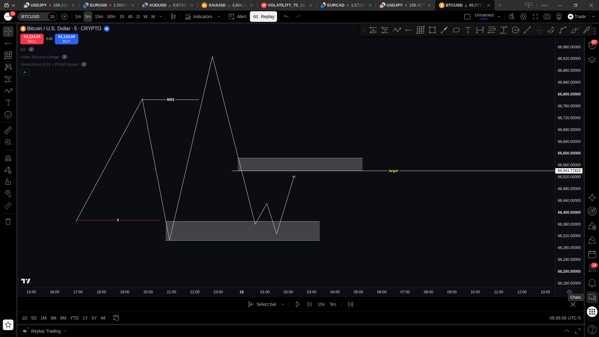
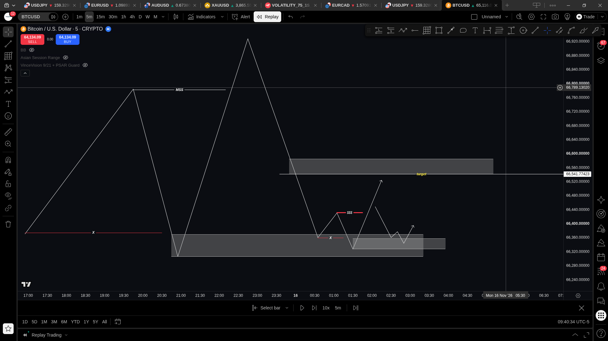
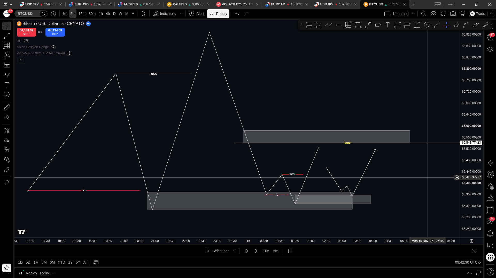
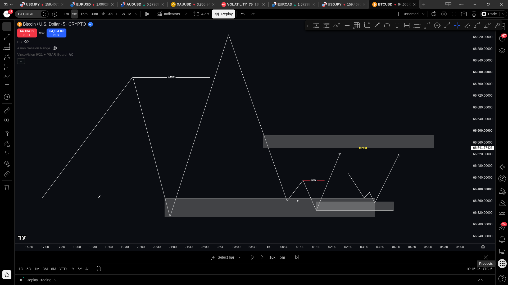
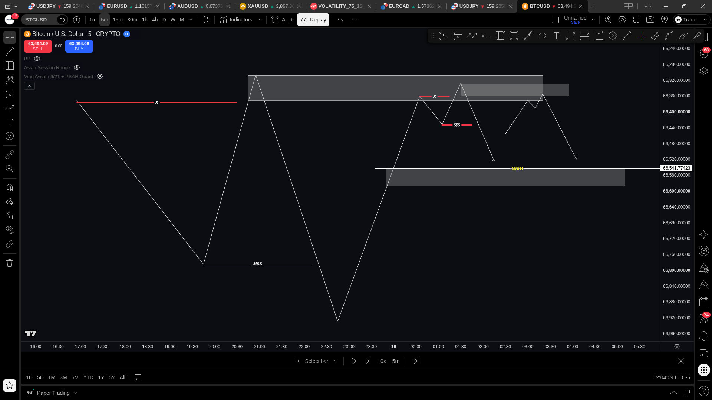
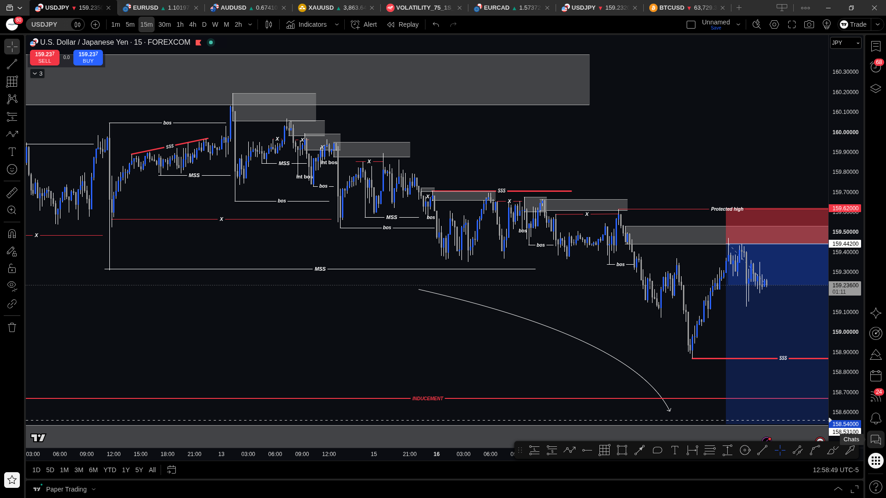
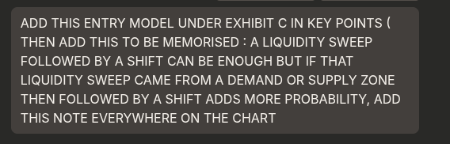
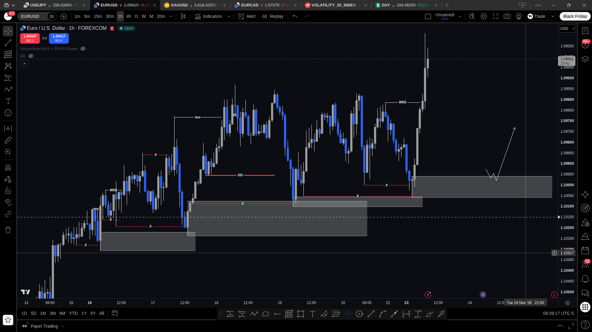
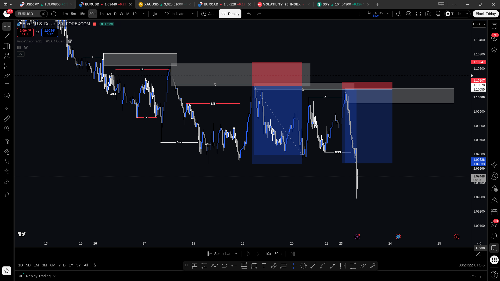
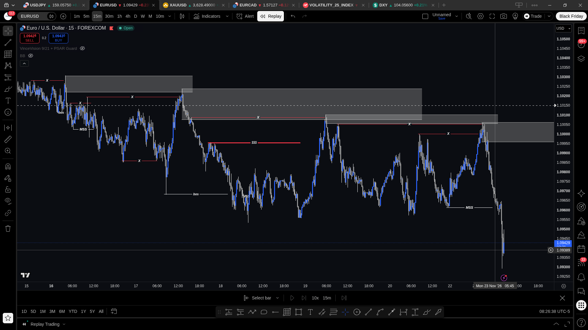

Method · Key points
Key points: the whole method in one page
Everything the other pages teach, distilled to the lines that actually decide trades. Read it before the session. Then close it and mark your own chart — the point of this page is that you never need it open while you trade.
- 1 page
- Read before session
- No signals, only rules
The only sequence
Every trade on this site is the same six lines, in this order. Written for longs; mirror it for shorts.
- Direction.The analysis rung has closed above a high. Longs only. Bearish rung: shorts only, or stand aside.
- Liquidity and target.Mark what rests: equal lows, a range edge, a session low. Mark the target first — the nearest clear high — and check the room before anything else.
- Sweep.Price trades through the level and closes back inside, wick or within two candles. Mark the extreme: that is the protected level and the stop goes beyond it.
- Shift with imbalance.A candle close through the last lower high, leaving an imbalance. A wick is not a shift. A slow break with no gap is not a shift.
- Zone and order.The last down candle before the shift leg is the zone. Limit at its top edge, stop beyond the protected level plus buffer, target at the marked liquidity. Under 1:2, no order.
- Size, hold, record.Half to one percent. Alert set, hands off. Win or lose, the trade goes in the log with its screenshots.
The long version with drawings: zone model and sweep model. The morning version: notes.
The timeframe-stacked version, exactly as the note states it: the routine in four steps.
Where the leg began decides the target
A rule earned in backtesting. Two sweeps can look identical on the entry timeframe and deserve completely different targets, because of what the higher timeframe is doing underneath.
| Setup | Gate | Target |
|---|---|---|
| Sweep at a higher-TF zone, and the HTF leg itself started at a demand | With-trend bias | Far liquidity: the nearest HTF swing, else the week high or low |
| Sweep at a higher-TF zone, but the HTF leg started at swept liquidity | With-trend bias | The next liquidity point on the entry TF only |
| Bare sweep — no zone behind it | Only when the HTF itself shifted away from that swept liquidity | The next liquidity point on the entry TF only |
| Bare sweep, HTF leg from a demand or from nothing | Refused. Label it, walk on. | — |
The one-liner
A bare sweep trades only when the higher timeframe shifted from swept liquidity, and then it aims at the first pool in front of it — never at HTF highs or week lows. Far targets belong to zone-backed moves whose higher timeframe also came from a demand.
Exhibit A, drawn from a replay: BTCUSD 5m — sweep, MSS, and a target that stops at the first pool.
Exhibit C, drawn on your own terminal: EURUSD 30m — two sweeps into one supply, one target drawn once.
Exhibit D, three of your own charts: one gate run twice as shorts and once in the mirror for longs — and the probability rule to memorise.
The routine in four steps
The note as posted, then unpacked into the order it is actually executed. Every other line on this page is detail inside one of these four steps — nothing here is a fifth rule.
The note, verbatim
“ON HIGHER TF SPOT LIQUIDITY SWEEP AND BREAK OF STRUCTURE AND A SUPPLY OR DEMAND FROM THE LEG, THEN WAIT FOR THE SHIFT. AS FOR TARGETS USE THOSE FROM THE TIMEFRAME OF THE SHIFT.”
- Step 1 · Higher timeframe: three marks.On the higher timeframe spot the liquidity sweep (the X), the break of structure that follows it, and the supply or demand the leg left at its origin. All three, or the chart is not ready: the sweep names the fuel, the break names the direction, the zone names where the move began. A sweep with no zone behind it is a different animal — see the bare-sweep rows in the origin table.
- Step 2 · Wait for the shift, one frame down.Nothing is ordered on the strength of the higher-timeframe marks. Drop to the lower timeframe and wait for the shift — a candle close through the pullback’s last high or low, leaving an imbalance. A wick is not a shift; a slow break with no gap is not a shift. This is the confirmation note 12 demands, drawn in full on the confirmation model.
- Step 3 · Enter at what the shift leaves.The order block at the shift candle is the entry. The stop goes beyond the structure the shift depends on — the protected high or low it made — never inside the block. Under 1:2 to the step-4 target, there is no order.
- Step 4 · Target the shift’s own timeframe.The pools that belong to this trade are the ones on the timeframe of the shift: the next liquidity in front of it, drawn before the entry. Do not reach up for higher-timeframe swings or week lows — the origin table says exactly when a far target is earned, and this is not it unless the sweep sat at a zone whose higher timeframe also came from a demand.
The sentence that ties it together
The higher timeframe supplies the marks, the shift supplies the timing, and the shift’s timeframe supplies the target. Three different timeframes in one trade — which is why the pairs table is not optional, and why a step missing is a skip, not a smaller size.
Exhibit A: a replay, drawn
BTCUSD 5m, replayed and marked by hand, then drawn here in the site’s style. Every mark is one of the key points above; the numbers are the replay’s.
Left to right: the 17:00 low rests at 66,365 (dotted, with the X where the 20:45 leg sweeps it); MSS at 66,785 when the 66,925 leg closes above it; that sweep creates the demand 66,310–66,365; the return taps it twice and the long fires from the second tap; the first bounce leaves $$$ at 66,435 and the 01:30 drop sweeps the 66,360 low (second X) before taking those $$$; each leg leaves a smaller zone and a higher protected low; the target stays 66,541.77 — the supply in front — while the 66,925 high above it is deliberately not the target.
The replay itself, frame by frame
The charts exactly as they were marked — full size, untouched, in the order they happened.




The same session, sold
The mirror, marked by the same hand: everything above, upside down.

- The sequence mirrors exactly. Sweep of the highs, a close below the last low for the shift, the zone the sweep created, taps and internal sweeps as fuel, the protected high ratcheting down while the target stays put. Nothing on the sell side is a different rule.
- Liquidity does not pick sides. 66,541.77 was the target from below in the long frames and from above in this one, because in each direction, at its time, it was the nearest untouched pool. The origin rule holds mirrored: a bare sweep aims at the next lower-timeframe pool, never at the week’s extremes.
What the replay teaches
- The move fuels itself. Every leg up swept what the last leg left behind: the $$$ at 66,435, then the internal lows at 66,360. Untouched liquidity in front is fuel; spent liquidity behind is not a reason to re-enter.
- The protected low ratchets. Each new internal sweep made a smaller zone and a higher protected low: 66,310, then 66,325, then 66,360. The stop moves up with them. The target never moves down to meet impatience.
- A target not reached is not a reason to chase. Price stalled at about 66,520, eleven dollars short, twice. The staircase either continues from a new swept low or dies at the protected low. Adding at the stall is how a 4:1 becomes a 0:1.
Risk on the drawn trade: entry about 66,325, stop under 66,310, target 66,541.77 — roughly 4:1 before costs. The same maths the sequence demands.
Exhibit B: what a trend actually looks like
USDJPY 15m, marked live across three days: the same sequence running leg after leg, with the market’s bait labelled where it sits. A trend is not a direction you guess — it is a loop you keep re-running.

- Structure has gears. int bos inside the leg, bos for continuation, MSS at the turn. Name the break you are trading: internal breaks fund the leg, external breaks confirm it, a shift flips it.
- A trend is the sequence on loop. Sweep, shift, zone, break — rerun on every leg, each one starting where the last one left its liquidity. The staircase is not a different method; it is the same six lines applied again.
- One level cancels it. While the protected high ratchets down — here to 159.62 — every rally is fuel, not a reversal. A close above it is a new chart, not a better discount.
- Inducement is the market’s negotiation. The clean level just above real demand (158.66 in front of 158.54) exists to be taken first. A short targets through the internal $$$ into it and expects the final leg only after; a long never buys it — it waits for the sweep of the real level and the shift. See inducement.
Exhibit C: your own chart, marked before the entry
EURUSD 30m, marked on your own terminal across 22–26 Nov: not a replay and not a slide, the same discipline on a live chart with an order in mind. Two sweeps into one supply, a bos between them, and a target drawn at the low the first drop printed — drawn before the second sweep ever gave the entry.
![EURUSD 30m on TradingView, 22 to 27 Nov, drawn by hand in line form. A grey supply zone spans about 1.10975 to 1.11040 from 24 Nov rightwards. Price falls from about 1.11100 on the 22nd to about 1.10800, rallies to a high near 1.10990 that a red X line marks as a spike tags the zone's lower edge on the 24th, then breaks structure at a bos line near 1.10820 and drops to a low near 1.10625 on the 24th, where a white TARGET line is drawn and runs right. The pullback rallies on the 25th to a first high near 1.10910 that a second red X line marks; on the 26th price sweeps that high, tags the zone near 1.10980, and turns lower with an arrow near 1.10840 towards the unchanged target.](assets/img/key-points/eurusd-30m-two-sweeps.png)
- The zone comes first. The grey supply exists before price tests it, and nothing is traded until price shows its hand against it: a sweep, then a break. An area on the chart is not a position.
- The first sweep sets the side; the first drop sets the target. The X near 1.10990 with the bos near 1.10820 is sellers confirmed. The low that drop prints, near 1.10625, is the next pool below — so the target goes there and not further, exactly as the origin rule above demands.
- The second sweep sets the timing. The pullback's first high near 1.10910 is the inducement resting above the entry. The short waits for it to be taken; on the 26th it is swept and the zone tagged in one push. Selling the zone's first touch on the 24th would have meant carrying two days of pullback with the stops of the swept high above you.
- One target, drawn once. The TARGET line exists from the 24th and does not move on the 25th or the 26th, although price returns to the zone twice. If the second sweep never comes, there is simply no trade — and the marks were still right.
The same five frames in TrendForge's words: the confirmation model. Where the target sits and why: origin decides the target, above on this page.
Exhibit D: one gate, three charts — and the mirror
The entry model this site teaches, shown on three of your own charts instead of a diagram: a liquidity sweep followed by a shift is enough to act — but when the sweep itself comes from a demand or supply zone, the shift that follows carries more probability. Two shorts on the euro's 30m and 15m, and the same gate flipped in the mirror for longs on your 1h paper chart.

Left: the X sits in no-man's-land — the sweep clears liquidity and the MSS that follows is the only evidence, which is enough to act. Right: the X sits at the supply's floor — the sweep triggers the zone's own defenders, so the MSS that follows carries their weight too. Same gate, different weight behind it.
The three reference charts, untouched



Read the three charts against the only sequence and origin decides the target: the sweep names the fuel, the zone it came from names the weight, the shift names the timing, and the pool beyond names the target. The mirrored long is not a second model — it is the same four marks with the scale turned around, which is why the note above is worth memorising once and applying everywhere. It is pinned as note 13 and repeated beside every chart on this site that teaches the gate.
The gate has a name: confirmation entry
What the mirror shows is the confirmation entry model, in the owner’s own framing: after a prior sweep, wait for the shift that follows the tap of a demand or supply — then, and only then, does the order exist. The sweep names the fuel, the tap asks the zone whether it is defended, and the shift is the zone’s answer; the entry sits in the smaller zone the shift leaves, or at the tapped edge when the shift came first and left the zone behind. An aggressive limit resting at an untapped zone is a prediction; this gate is a reply. The four newest cases run the beats in that order — the TrendForge deck, the 10m gold tap, the fourteen-hour franc wait and the four-day Aussie wait — and Entry models keeps the aggressive contrast honest, with the kept loss as the price of skipping the shift.
The skips are the strategy
The entries take care of themselves once these are honest. Every line here has a losing trade behind it.
- No sweep before the break — the break has no fuel and no protected level.
- Break without imbalance — a slow drift through structure is not a shift.
- Zone already tapped — a used zone is a story told twice.
- Target already spent — if the liquidity you aim at was already taken, the move is gone. Ask: is my target still untouched?
- Against the higher timeframe — except at a major level, with a nearer target and half the risk.
- Protected level closed through — the idea is dead; delete the order, do not move the stop.
- Under 1:2 — the maths does not pay for the misses.
- High-impact news still being priced — that is a coin flip wearing a setup’s clothes.
Timeframe pairs
Analysis two rungs above the entry. The middle rung is optional; the pair is not.
| Analysis rung | Entry rung | Middle (optional) |
|---|---|---|
| Weekly | 4H | Daily |
| Daily | 1H | 4H |
| 4H | 15m | 1H |
| 1H | 5m | 15m |
| 15m | 1m | 5m |
If the entry rung gives no confirmation, the trade does not drop a rung — it waits. Full page: top-down analysis, the pair table.
Two doors: 50 and 75
50% — equilibrium
- This site’s line: buy below it, sell above it.
- More trades, shallower entries, wider stops.
75% — the deep door
- The posted rule: direction, sweep, BOS with imbalance, then a 75% retracement before the zone earns an order.
- Fewer trades, deeper entries, tighter stops — and more moves that leave without you.
Not a contradiction: two doors into the same room. Pick one per setup type, write down which, and let the log decide after 50 samples — not after one missed move. See Note 11.
Risk, in four lines
- Half to one percent of the account per idea. One idea, one risk.
- Add only to a winner, only after a new sweep, shift and zone; move the first stop first; never more than the first size; same target; two adds maximum.
- One re-entry after a stop-sweep, never a second.
- Every trade recorded: screenshot, numbers, the rule that gave the entry, the rule that was bent.
The long form lives in the playbook risk rules and scaling & re-entry.
“If it’s there, great. If not, I’ll wait.”
4H for direction, liquidity sweep, BOS with imbalance, and a 75% retracement. If it’s there, great. If not, I’ll wait. A trade that never arrives costs nothing. A chased one costs R, and then it costs the next setup too, because you are in it when it comes.
Why there is no indicator for this
It was tried
This method was once written as a chart indicator. The chart filled with lines, the structure still needed an eye, and the judgement — the part that decides — stayed exactly where it started: with you. So the code went and this page stayed. Mark it yourself, on your chart, in your own time. That is the point of the method.